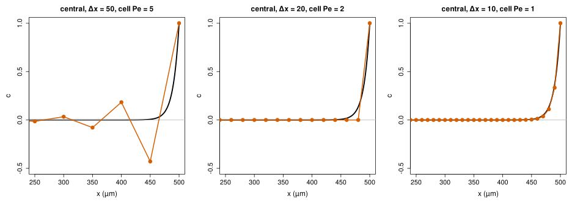
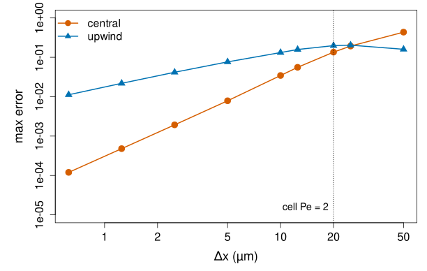
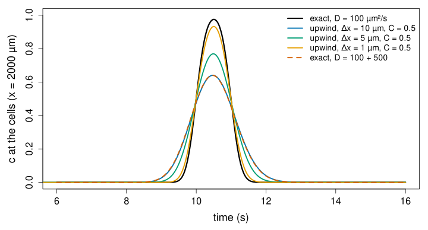
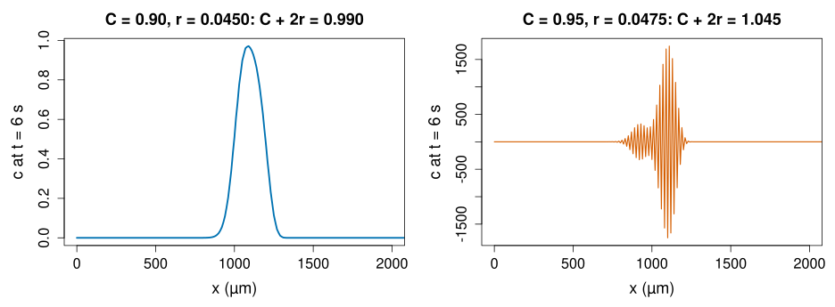
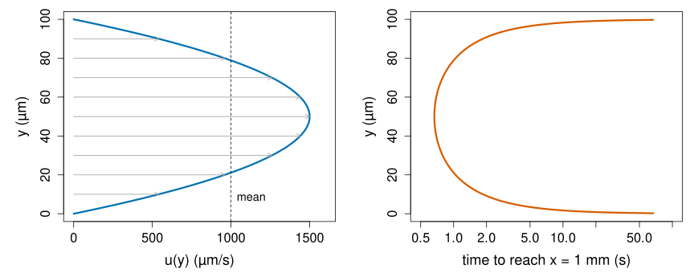
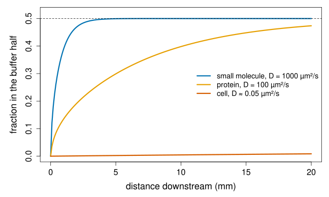
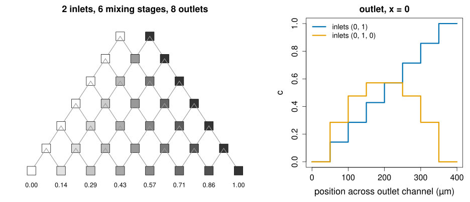
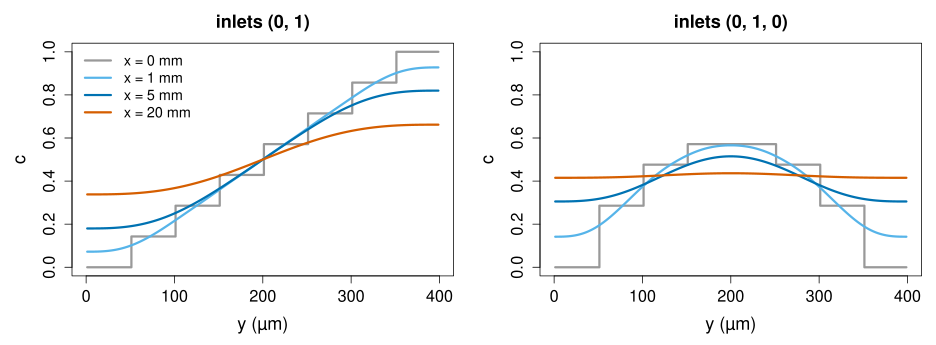

Part 10 — Diffusion and heat: finite-difference PDEs
Numerical analysis for biologists
About this lecture
So far the fluid in the chip stood still. Most microfluidic devices pump it: the flow carries molecules downstream while diffusion spreads them sideways.
The flux gets a flow term: the advection–diffusion equation\partial c/\partial t + u\,\partial c/\partial x = D\,\partial^2 c/\partial x^2.
The Péclet number\text{Pe} = uL/D says which wins. In microfluidics Pe ≫ 1: two streams flow side by side for millimetres before they mix.
Central differences for \partial c/\partial x give wiggles when the cell Péclet number u\Delta x/D > 2. Upwind differences never wiggle, but they add a numerical diffusionu\Delta x/2.
Explicit time steps obey the CFL conditionu\Delta t/\Delta x \le 1: a stability limit like r \le 1/2.
Along a channel the downstream coordinate acts like time: we march in x, with a given Poiseuille flow profile.
Biology: the T-sensor / H-filter (small molecules cross, cells do not), the Christmas-tree gradient generator for neutrophil chemotaxis, and a fit of a diffusion coefficient.
Biology: two streams that do not mix
T-sensor / H-filter [T1, T2]: a sample (with small molecules, proteins, cells) and a buffer enter side by side. Flow is laminar, so the only way across is diffusion.
Small molecules cross within a few mm; proteins much more slowly; cells hardly at all. Collect the buffer half: a filter without a membrane.
One equation per interior point: a tridiagonal linear system, as for steady diffusion.
P is the Péclet number of one grid cell. Here P = 100\cdot\Delta x/1000 = \Delta x/10.
When P > 2 the coefficient of c_{i+1} is negative. Watch that sign.
Central differences in R
L <-500; D <-1000; u <-100# Pe = u L / D = 50steady <-function(N, scheme, D =1000) { dx <- L / N; P <- u * dx / D; m <- N -1# P = cell Peclet numberif (scheme =="central") { lo <-1+ P/2; di <--2; up <-1- P/2 }else { lo <-1+ P; di <--2- P; up <-1 } A <-diag(di, m) A[cbind(2:m, 1:(m-1))] <- lo; A[cbind(1:(m-1), 2:m)] <- up b <-numeric(m); b[m] <--up # c(L) = 1 moves to the right sidec(0, solve(A, b), 1)}round(steady(10, "central"), 3) # dx = 50 µm, P = 5# [1] 0.000 -0.001 0.001 -0.003 0.006 -0.015 0.034 -0.079 0.184 -0.429# [11] 1.000
Negative concentrations, alternating in sign. The exact values are 0 except c(450) = 0.007.
Wiggles appear when P > 2

P = 5: oscillations through the whole channel. P = 2: no wiggles, but a kink. P = 1: on the exact curve.
The cure is a finer grid near the layer: \Delta x < 2D/u = 20 µm.
So upwind with D = central with D + u\Delta x/2, exactly, on any grid:
dx <-50max(abs(steady(10, "upwind") -steady(10, "central", D = D + u * dx /2)))# [1] 2.775558e-17
Numerical diffusionD_\text{num} = u\Delta x/2 = 2500 µm²/s here, 2.5× the real D.
Rule: upwind is trustworthy only where D_\text{num} \ll D, i.e. cell Péclet P \ll 2.
Error against grid spacing

Central: no convergence until P < 2, then slope 2. Upwind: slope 1, never wiggles.
To get 1 % error, central needs \Delta x \approx 5 µm, upwind \approx 0.5 µm.
Time-dependent: a pulse of stimulus
A 1 s pulse of a protein (D = 100 µm²/s) is carried at u = 200 µm/s to cells 2 mm downstream. Explicit Euler in time, upwind in space:
u <-200; D <-100; dx <-10; x <-seq(0, 3000, by = dx)C <-0.5; dt <- C * dx / u; r <- D * dt / dx^2# dt = 0.025 s, r = 0.025n <-length(x); i <-2:(n -1); c <-numeric(n); obs <-NULLfor (k in1:round(16/ dt)) { c[i] <- c[i] - C * (c[i] - c[i -1]) + r * (c[i -1] -2* c[i] + c[i +1]) c[n] <- c[n -1] # outflow: zero slope c[1] <-if (k * dt <=1) 1else0# inlet: a 1 s pulse obs <-c(obs, c[x ==2000]) # what the cells see}c(peak =max(obs), t_peak =which.max(obs) * dt)# peak t_peak# 0.6405016 10.4750000
C = u\Delta t/\Delta x is the Courant number: how many cells the flow moves per step.
Numerical diffusion again

Upwind in time adds D_\text{num} = \dfrac{u\Delta x}{2}(1 - C) = 500 µm²/s, 5× the real D. The red dashed curve (exact, D = 600) lies on top of the blue one.
\Delta x = 1 µm: peak 0.93 instead of 0.975. A fine grid is the price of upwind.
The CFL condition
The explicit upwind update, sorted by grid point:
c_i^{n+1} = (C + r)\,c_{i-1}^n + (1 - C - 2r)\,c_i^n + r\,c_{i+1}^n, \qquad C = \frac{u\Delta t}{\Delta x},\; r = \frac{D\Delta t}{\Delta x^2}
Weights \ge 0 (an average, no new extremes) if \boxed{C + 2r \le 1}. Without diffusion: C \le 1, the CFL condition.

Try it: wiggles, smearing and the CFL limit
Back to the T-sensor: two dimensions, steady
Steady flow along x, profile u(y) across the channel, concentration c(x, y):
Drop diffusion along the flow: it is \sim 1/\text{Pe}^2 smaller (Pe = 100).
Then x plays the role of time: \dfrac{\partial c}{\partial x} = \dfrac{D}{u(y)}\,\dfrac{\partial^2 c}{\partial y^2}, a 1D diffusion equation in y, with “time step” \Delta x/u(y).
Start (x = 0): c = 1 in the sample half, 0 in the buffer half. Walls: no flux.
We march downstream from the inlet, one column at a time, instead of solving one big 2D system.
The flow profile is given: Poiseuille

u(y) = 6\,\bar u\,\frac{y}{w}\left(1 - \frac{y}{w}\right): \quad \text{zero at the walls, } 1.5\,\bar u \text{ in the middle.}
Not solved for here: slow pressure-driven flow in a channel has this parabolic shape.
Near the walls a parcel needs a long time to reach a given x, so it has longer to diffuse.
Marching: explicit fails at the walls
Explicit Euler in x needs D\,\Delta x/(u(y)\,\Delta y^2) \le 1/2 in every row: \Delta x \le u(y)\,\Delta y^2/(2D).
w <-100; ubar <-1000; M <-50; dy <- w / My <- (1:M -0.5) * dy # cell centres, 1, 3, ..., 99 µmu <-6* ubar * (y / w) * (1- y / w) # the given Poiseuille profilerange(u * dy^2/ (2*1000)) # largest stable dx per row (µm)# [1] 0.1188 2.9988
march <-function(c, u, D, dy, dx, nsteps) { # backward Euler in x M <-length(c); a <- D * dx / (u * dy^2) # one "r" per row di <-1+2* a; di[c(1, M)] <-1+ a[c(1, M)] # no-flux wallsfor (k inseq_len(nsteps)) c <-thomas(-a, di, -a, c) c}c0 <-ifelse(y < w /2, 1, 0) # sample below, buffer abovesmall <-march(c0, u, 1000, dy, 50, 20) # 20 steps of 50 µm: x = 1 mmprotein <-march(c0, u, 100, dy, 50, 20)up <- y > w /2# the buffer halfc(small =sum(u[up] * small[up]), protein =sum(u[up] * protein[up])) /sum(u * c0)# small protein# 0.3944334 0.1361406
Check: the flux\sum_j u_j c_j is conserved exactly (sum(u * small) / sum(u * c0) is 1).
Small molecules cross, cells do not

At 2 mm: small molecule 47 % (complete mixing gives 50 %); protein 19 %; cells 0.1 %.
An H-filter is designed by choosing the length (or the flow rate): long enough for the small molecule, short enough to keep the protein back. Purity is a trade-off.
The Christmas-tree gradient generator

Each stage splits n streams into n + 1; each new channel takes fixed shares of its two upstream neighbours and mixes them fully in a long serpentine [G2].
Two inlets (0, 1) give a linear staircase 0, \tfrac17, \dots, 1; three inlets (0, 1, 0) give a hump.
What the neutrophils see

The 8 streams flow side by side in a 400 µm channel (\bar u = 200 µm/s, D = 100 µm²/s). Same march(), same Poiseuille profile.
The steps are gone within ~1 mm; further down the whole gradient flattens, fastest near the slow walls. Cells must sit in the right window.
Fitting D from a downstream profile
The original T-sensor work estimated diffusion coefficients by fitting a numerical model to measured profiles [T1]. Synthetic version: a dye with unknown D, 25 pixels of 4 µm, x = 1 mm.
profile <-function(D, M =50, dx =25) { dy <- w / M; y <- (1:M -0.5) * dy u <-6* ubar * (y / w) * (1- y / w) c <-march(ifelse(y < w /2, 1, 0), u, D, dy, dx, 1000/ dx)colMeans(matrix(c, M /25)) # 4 µm pixels}sse <-function(D) sum((cobs -profile(D))^2)optimize(sse, c(10, 3000), tol =1e-6)$minimum# [1] 398.1985
Péclet numbers: compute Pe for the device and the cell Péclet number u\Delta x/D for the grid. Layers have thickness \sim D/u; the grid must resolve them.
Wiggles (central): values outside the range of the boundary and initial values, alternating signs. Refine until u\Delta x/D < 2.
Smearing (upwind, backward Euler in x): compare D_\text{num} \approx u\Delta x/2 with D. Refine; the answer must stop changing.
Stability (explicit): C + 2r \le 1 for upwind/FTCS, row by row; the slowest fluid (near walls) can set the step for marching.
Conservation: the solute flux \sum u_j c_j is constant along a closed channel.
Exact solutions: boundary layer, plug-flow Fourier series, erfc pulse. Test the code on them first.
Fits: refit on a finer grid; know the flow rate, since only D/\bar u is identifiable.
Summary
Flow adds the flux u\,c: \;\partial c/\partial t + u\,\partial c/\partial x = D\,\partial^2 c/\partial x^2. The Péclet numberuL/D compares the two; in microfluidics Pe ≫ 1 and streams stay separate for a mixing length\approx \bar u w^2/D.
Central differences: second order, but wiggles when the cell Péclet number u\Delta x/D > 2 (negative weight, \rho < 0).
Upwind: no wiggles, first order, and exactly the central scheme with extra numerical diffusionu\Delta x/2 (time-dependent: u\Delta x(1 - C)/2). Silent smearing.
Explicit time stepping: CFLC = u\Delta t/\Delta x \le 1; with diffusion C + 2r \le 1.
Steady channel flow at large Pe: march in x as if it were time, with a given Poiseuille profile; implicit (tridiagonal) because slow fluid near the walls makes explicit marching stiff.
Biology: the H-filter separates by D; the Christmas tree builds gradients for neutrophils; a fitted D is only as good as the grid and the known flow rate.